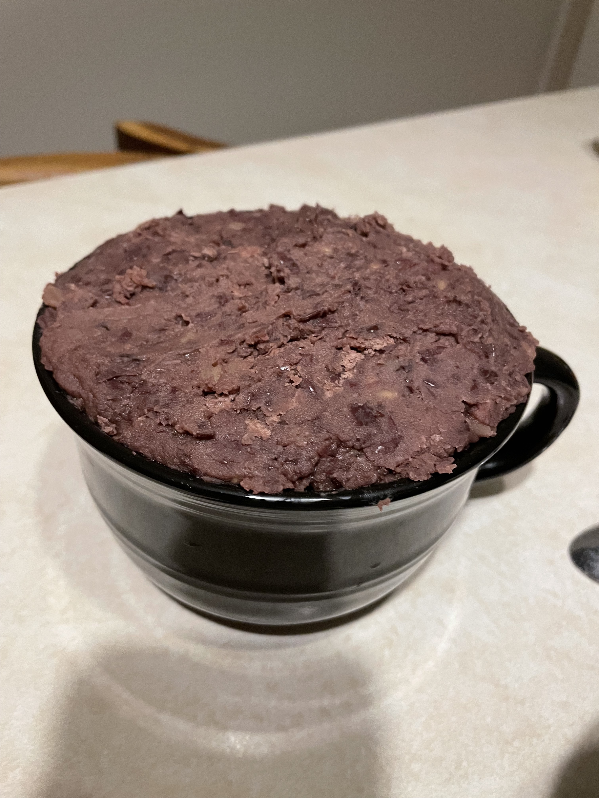
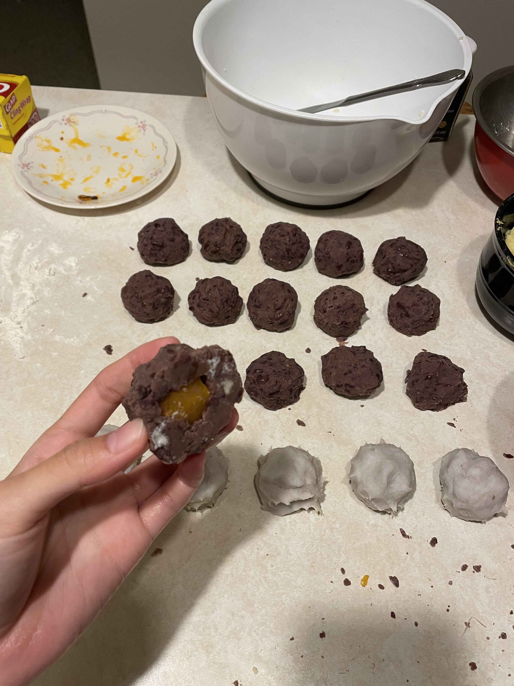
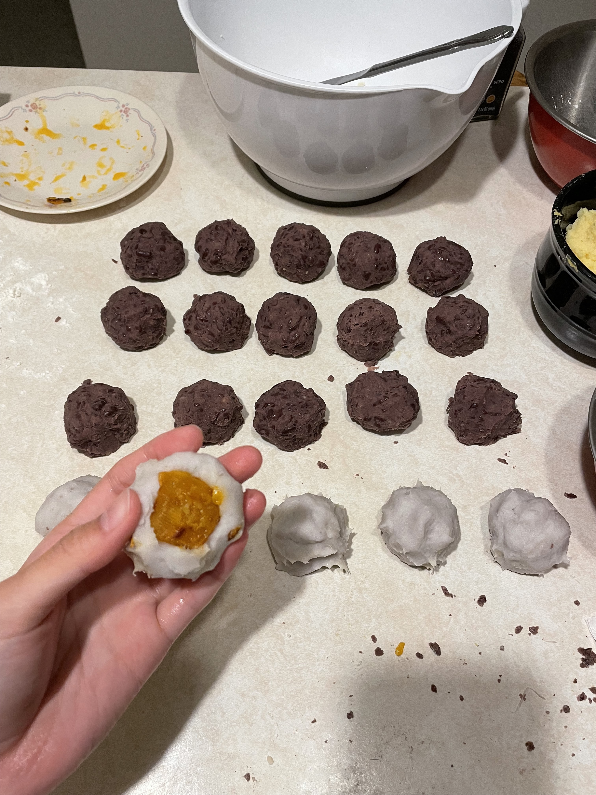
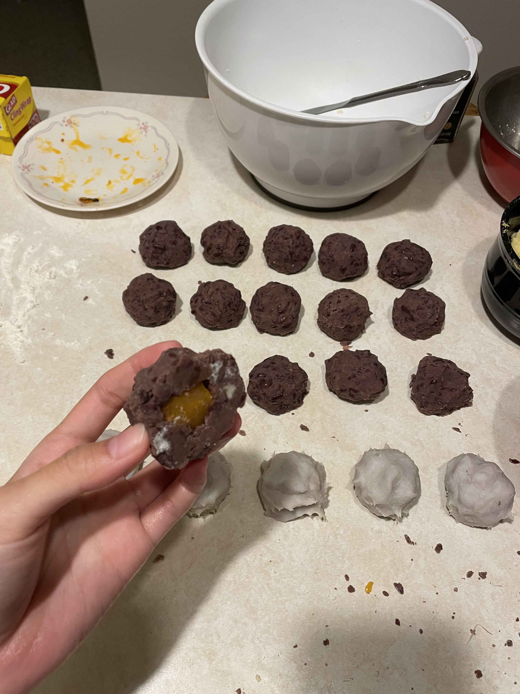
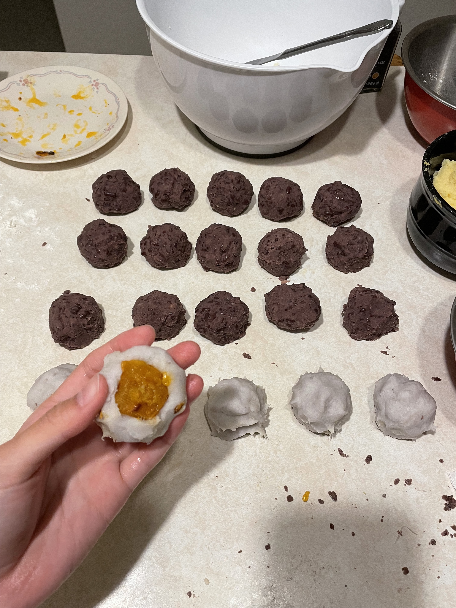
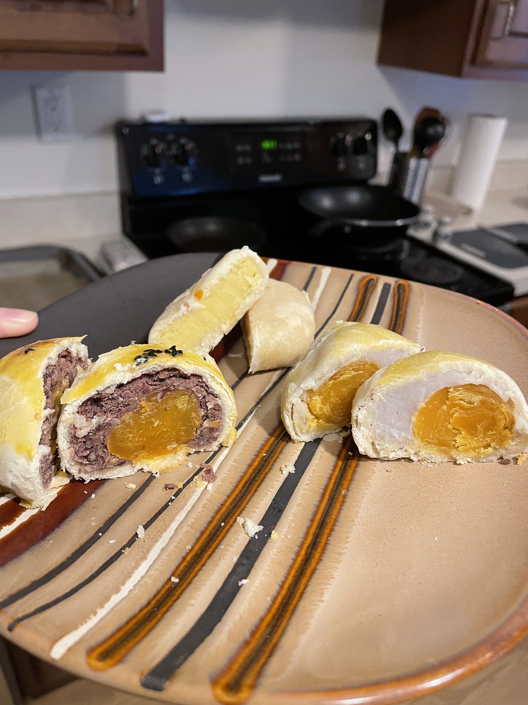
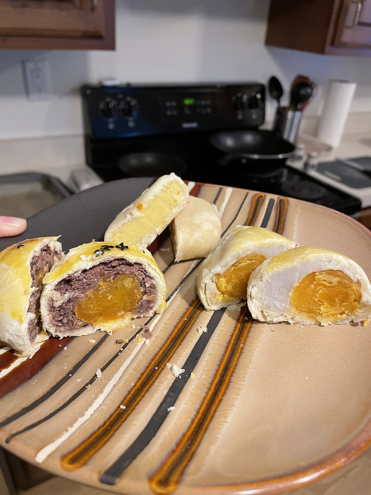

I made my favorite kind of mooncake - egg yolk moon cake, this year. The mooncake is a small kind of pastry we eat as a dessert on the moon festival, which is usually in late September. The egg yolk moon cake has an egg wrapped inside the bean paste filling, as is delicious. The recipe is a big more complicated and time consuming. But for a taste of home, I’d say it’s worth it!

 





 

Ingredients oily skin All purpose flour 67g low-gluten flour 15g pure powdered sugar 15 grams Anhydrous cream 35 grams water (room temperature) 37 grams pastry Low-gluten flour 115 grams Anhydrous cream 52 grams stuffing raw salted egg yolk 10 Low sugar and low oil mandarin duck red bean paste 225 grams rum 10 grams egg yolk yolk 34g (2 pieces) water 3.4 grams Decorate raw black sesame 6 grams